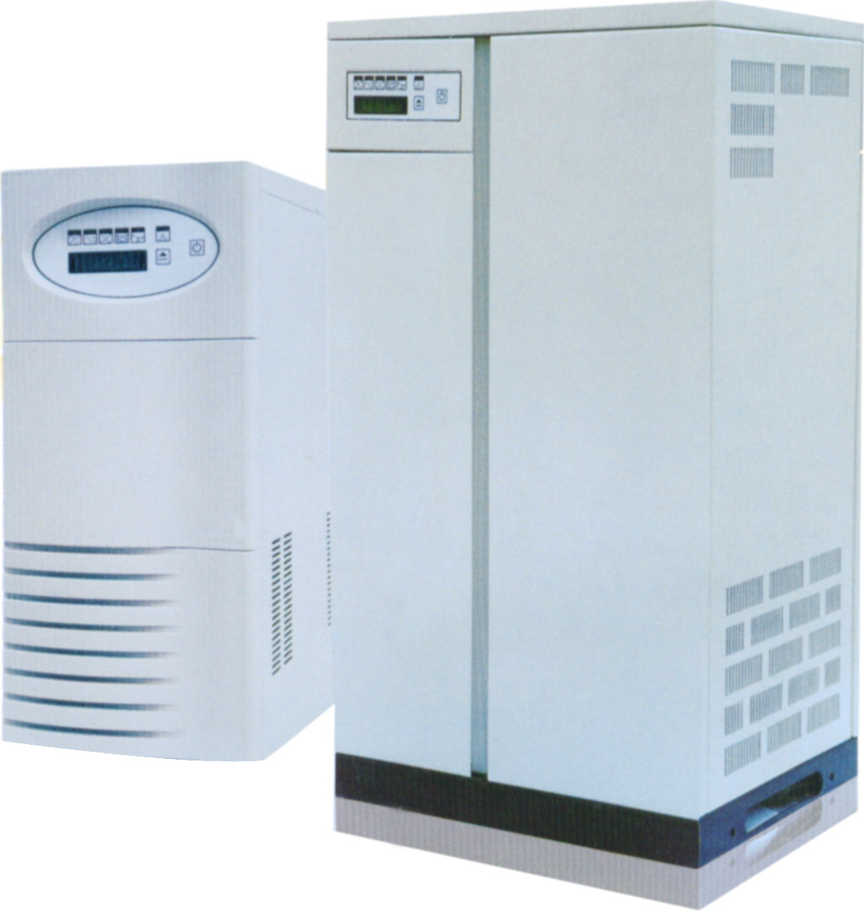
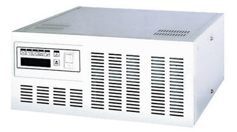

容量范围：工业级10VA-50KVA
主要性能：
●纯在线的静态旁路技术：内置静态旁路开关，提供了极强的旁路过载及故障保护装置。
●极高的运行效率，有效地降低机器的运行成本。
●宽广的输入电压范围，减少电池的运行时间，延长电池寿命。
●全微处理控制：对UPS的数据进行全面检测与处理，且保证在进行旁路供电和逆变器供电的双向切换操作时对后级负载均无任何扰动，并且当UPS发生故障时，微处理器发出处理信号，可无间断地转到旁路继续向负载供电，并提供声光报警。
●采用先进的恒流恒压自动转换充电技术，最大限度地活化电池，并拥有强大的充电电流，扩充电池组无需外加充电器。
●LCD全程检测数据：显示UPS各种运行状态，并且能通过面板可以设置UPS的一些参数，反映所有由微处理器检测的信号。
●超强的过载能力：125%负载时5分钟、150%负载时30秒。
●智能温控风扇，延长风机使用寿命，且能降低机器的噪声。
●智能化电池自检功能。
●RS232接口，提供智能型的监控软件，UPS多种工作状态可转换为界面信号输出，并且可遥控关机、在线电池测试。RS485接口，提供远程监控面板长达1200米(选件)。
●手工维修旁路SWMB，实现在线服务。
自动故障检测：对UPS的故障实行自动检测，且能直接反应在LCD 显示屏上使服务人员能够方便、快捷的消除故障。
●完善的保护功能：且有交流输入时、欠压，输出过、欠压，输出过载，短路保护，逆变器、整流器过温保护，电压欠压预警，电池过充电保护等多种保护于一体，保证系统运行的稳定性和可靠性。

容量范围：工业级1KVA-40KVA
◆针对中国电网而设计
POWERTEK A310系列电力专用UPS/逆变器产品针对中国发电厂、变电站设计之电力专用UPS/逆变器。它采用交直流双路输入，这是无须电池组的新电源解决方案，它不但成本低、效率高，而且维护管理容易；为客户提供安全、可靠、智能的供电系统。
（1）中央微处理器CPU控制技术
（2）超宽输入电压范围
（3）输入功率因数校正
（4）开机自诊断功能
（5）可搭配发电机使用
（6）计算机及远程监控能力
（7）直流DC220V或DC110V设计
（8）专业的工业标准设计